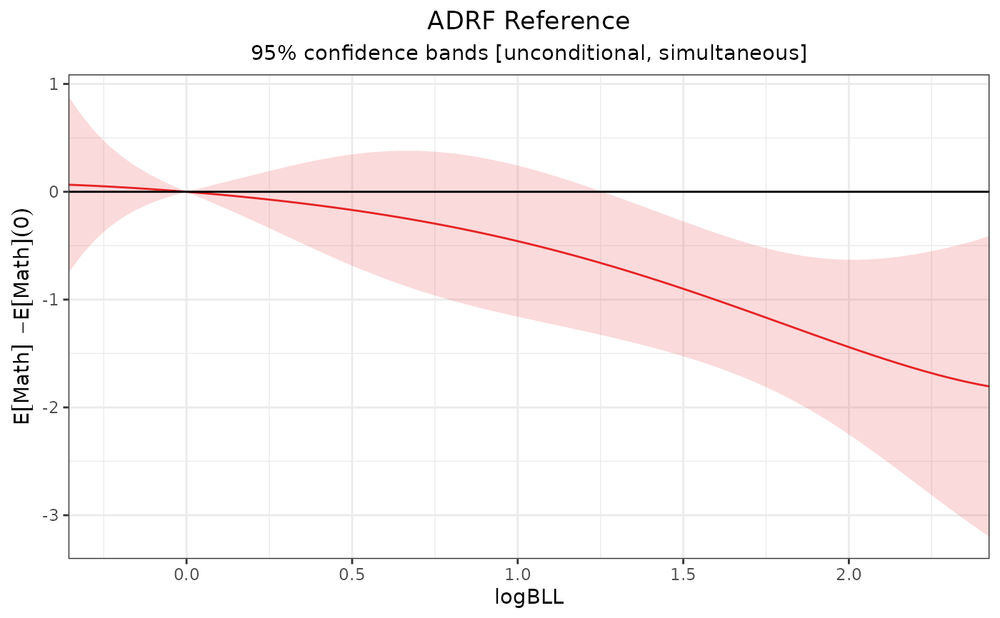

reference_curve() creates a new effect curve as the contrast between each point on a given effect curve and a specified point along that curve. The new curve is called a "reference effect curve".
Arguments
- x
an
effect_curveobject; the output of a call toadrf()or a function that modifies it.- reference
numeric; the value of the treatment to use as the reference value.
Value
An object of class reference_curve, which inherits from effect_curve, with the value supplied to reference as an additional attribute.
Details
The value supplied to reference is added as a grid point on the reference effect curve using the interpolation method described in effect_curve. The delta method is used to compute the variance of the difference between each point along the effect curve and the reference point.
See also
adrf()for computing the ADRFplot.effect_curve()for plotting the reference effect curvesummary.effect_curve()for testing hypotheses about the reference effect curvesummary.curve_est()for performing inference on individual points on an effect curve, including a reference effect curvepoint_contrast()for effect curve estimates to each other (rather than to a single point)
Examples
data("nhanes3lead")
fit <- lm(Math ~ poly(logBLL, 5) *
(Male + Age + Race + PIR +
Enough_Food),
data = nhanes3lead)
# ADRF of logBLL on Math, unconditional
# inference
adrf1 <- adrf(fit, treat = "logBLL")
# Differences between ADRF estimates and estimate
# at `logBLL = 0`
ref1 <- reference_curve(adrf1, reference = 0)
ref1
#> An <effect_curve> object
#>
#> - curve type: ADRF reference
#> - response: Math
#> - treatment: logBLL
#> + range: -0.3567 to 2.4248
#> - reference level: 0
#> - inference: unconditional
#>
# Plot the reference effect curve
plot(ref1)

# Reference effect curve estimates at given points
ref1(logBLL = c(0, 1, 2)) |>
summary()
#> ADRF Reference Estimates
#> ───────────────────────────────────────────────────────────
#> logBLL Estimate Std. Error t P-value CI Low CI High
#> 0 0.0000 0.0000 . . 0.0000 0.0000
#> 1 -0.4579 0.2662 -1.720 0.1461 -1.0437 0.1279
#> 2 -1.4403 0.3074 -4.685 < 0.0001 -2.1170 -0.7637
#> ───────────────────────────────────────────────────────────
#> Inference: unconditional, simultaneous
#> Confidence level: 95% (t* = 2.201, df = 2473)
#> Reference: logBLL = 0 | Null value: 0
# Test if reference effect curve is 0 (equivalent
# to testing if ADRF is flat)
summary(ref1)
#> Omnibus Curve Test
#> ───────────────────────────────────────────────────────
#> H₀: ADRF difference from reference (logBLL = 0) is 0
#> for values of logBLL between -0.3567 and 2.4248
#>
#> P-value
#> < 0.0001
#> ───────────────────────────────────────────────────────
#> Computed using the Imhof approximation